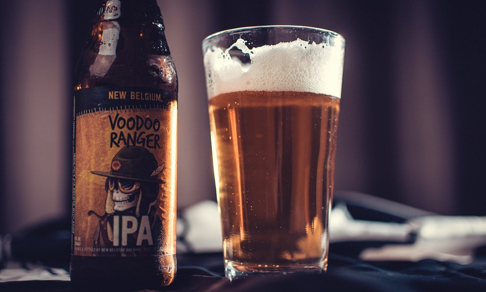
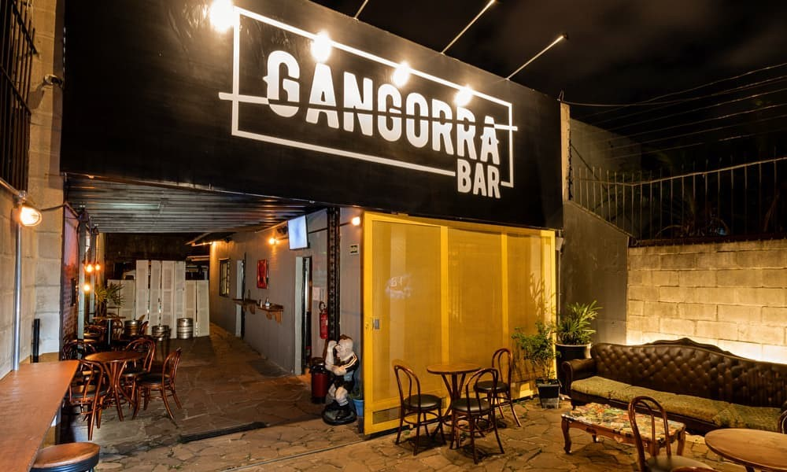

NACIONALIDADE // ÍNDIA
CARACTERÍSTICAS // Amargor acentuado, espuma cremosa e aromas de ervas
HARMONIZAÇÃO // Hambúrguer artesanal, pizzas variadas e macarronada.
INGREDIENTES // Água, malte, lúpulo e levedura.
Descrição
A IPA (Indian Pale Ale), é uma variação da Pale Ale inglesa, porém com uma carga maior de lúpulo, o que a torna intensamente mais lupulada e, no caso da American IPA, ela é a versão americana da IPA Inglesa, aqui novamente com ingredientes americanos, destacando os lúpulos. É uma cerveja mais lupulada e menos maltada do que a APA.
Onde encontrar?

GANGORRA BAR
EndereçoR. Dr. Gastão Rhodes, 39 - Santana, Porto Alegre - RS